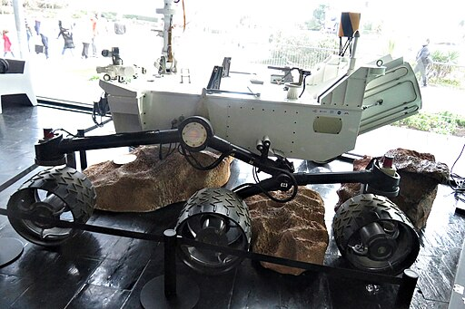

Este sitio web se ha desarrollado para proporcionar una visión general sobre Toulouse y sus principales atracciones culturales.
Las principales fuentes para elaborar el contenido de este sitio web han sido:
Todas las imágenes y videos de este portal son de dominio público o bajo licencia Creative Commons.
La principal fuente de la que se han obtenido las imagenes es Wikimedia Commons.
| Imagen | Descripción | Autor |
|---|---|---|
_Jean_Beauduy_-_Ensemble_de_sculptures_en_terre_cuite,_musée_des_Augustins.jpg) |
Prophets and Sibyls of Saint-Sernin | Didier Descouens |
 |
The triumph of Joseph (1657) by Hilaire Pader. Toulouse Cathedral | Didier Descouens |
 |
Apollo space suit at Cité de l'Espace | Rama |
 |
Astrovan replica at the Cité de l'Espace | Rama |
|  | Curiosity model at Cité de l'Espace | Rama |
 |
Model of Mir at Cité de l'Espace | Rama |
 |
Orion spacecraft model at Cité de l'Espace | Rama |
 (1).jpg) |
Basilica Saint-Sernin | José Luiz Bernardes Ribeiro |
 |
Basilica of St. Sernin, Toulouse, West exposure front of Hotel Dubarry | Didier Descouens |
 |
Cité de l'espace, Toulouse | kallerna |
 |
The giant mechanical minotaur and the hall of the company La Machine, in Toulouse (France). | Frédéric Neupont |
 |
Panorama from pont Saint-Pierre in Toulouse | PierreSelim |
 |
Pont-Neuf de Toulouse | Pistolero |
 |
Place du Capitole. Toulouse | ArnoLagrange |
.jpg) |
Saint-Etienne Square in Toulouse, view from Croix-Baragnon Street | Didier Descouens |
| Video página inicial | Quelques monuments Toulousain réalisé avec notre drone pour la ville ( cat S3 ) avec un GH4. Hôtel-Dieu Chapelle de la Grave, Le pont Saint Pierre Le pont-Neuf La Basilique de la Daurade Pont des Catalans Le Stadium | Damien-VICART |